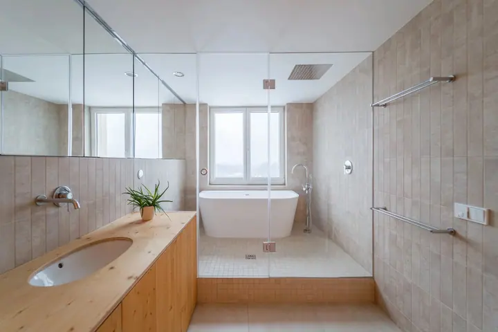
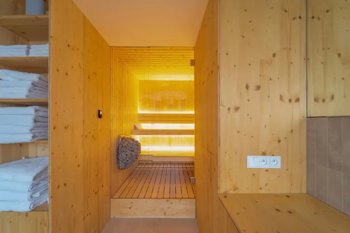

01 / 04
Svatební video
Natáčím celý svatební den, od příprav přes obřad a hostinu až po afterparty. Dostanete zhruba 4–5minutový sestřih s hudbou a k tomu zdarma všechny nesestříhané záběry s původním zvukem.
Zeptat se na termín→




Natáčím svatby, fotím velké večery
Zeptat se na termín →(01) Ahoj
Jmenuji se Martin Jakubec, jsem kameraman a fotograf z Prahy a natáčím po celé republice. Nejvíc mě baví svatební video, ale rád natáčím a fotím i firemní eventy , nemovitosti a besedy či konference .
(02) Co fotím
01 / 04
Natáčím celý svatební den, od příprav přes obřad a hostinu až po afterparty. Dostanete zhruba 4–5minutový sestřih s hudbou a k tomu zdarma všechny nesestříhané záběry s původním zvukem.
Zeptat se na termín→02 / 04
Natáčím a fotím firemní eventy, festivaly, koncerty i společenské večery. Právě u nich jsem s kamerou začínal.
Zeptat se na termín→03 / 04
Rád natáčím a fotím i reklamní videa a fotky pro firmy, jejich produkty a prostory.
Zeptat se na termín→Dále nabízím
Fotím a natáčím byty, domy i wellness prostory tak, aby vynikl jejich materiál, světlo a dispozice.
↗(03) Portfolio
Kliknutím fotku zvětšíte · fotografie jsou ilustrační
(04) Postup
Od první zprávy po hotovou galerii.
Krok 1 z 4
Pošlete mi datum a místo svatby a dejte vědět, jestli chcete jen videosestřih, nebo i záběry dronem. Když budu mít volný termín, domluvíme závaznou rezervaci.
Krok 2 z 4
Zhruba měsíc před svatbou si e-mailem, po telefonu nebo přes videohovor projdeme harmonogram dne. Když budete chtít, rád se s vámi potkám i osobně.
Krok 3 z 4
Natáčím většinou celý den, zhruba 12 hodin, po domluvě i déle. Od příprav přes obřad a hostinu až po afterparty.
Krok 4 z 4
Dostanete zhruba 4–5minutový sestřih s hudbou, kterou si můžete vybrat sami. Jako bonus k němu zdarma přidám všechny nesestříhané záběry s původním zvukem.

Atmosféru a emoce si zaslouží video
(05) Za objektivem
Jsem svatební kameraman, žiju v Praze, ale natáčím po celé České republice. Začínal jsem natáčením festivalů a firemních eventů. Časem jsem ale zjistil, že nejupřímnější atmosféru a emoce zažijete na svatbě. Proto je dnes mou hlavní vášní právě svatební video.
Na svatbě s vámi strávím většinou celý den, zhruba 12 hodin. Natočím přípravy, obřad, hostinu, párové focení i afterparty a mezi tím spoustu drobných chvil s hosty. Když budete chtít, přidám i záběry z dronu. Výsledné video je hlavně vaše vzpomínka, takže se rád přizpůsobím i jiné délce nebo formátu.
Mimo svatby natáčím a fotím eventy, reklamní videa a nemovitosti. Ostatní videotvorbu najdete pod značkou Creatif Production.
Martin
Martin Jakubec · Svatební kameraman a fotograf
Videosestřih z celého dne stojí 22 000 Kč, s dronem je to dohromady 25 000 Kč. Dopravu si hradím sám. Když máte jinou představu, rád se domluvím individuálně.
Hotový sestřih ode mě dostanete do 14 dnů po svatbě.
Ano, žiju v Praze, ale natáčím a fotím po celé České republice.
Ano, kromě svateb natáčím a fotím eventy, reklamní videa a nemovitosti. Napište mi, co potřebujete, a domluvíme podrobnosti.
(07) Kontakt
Napište pár vět o tom, co si představujete, a termín, který se vám hodí.